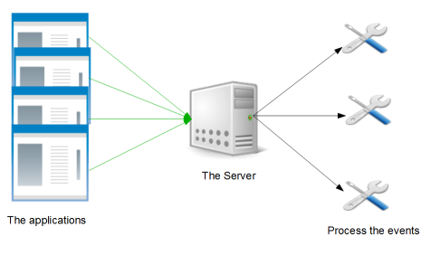

| Features : | Main | Server | Client | Vertx mods |
Welcome to Logpile web project.
The purpose of this projects is to in only one repository collect all the errors of your application java and treat them : grouping all your applications in one and only log, store them, email them, etc ....
Why this framework ?
Bescause :
- The majority of other solution is complex to install.
- The majority of your enterprise application are written in java. Your developpers know the java language. You want a little product for spying the state of your applications in production. This project must be an good start for inspiration.
- It's fun to developp applications with the latest technology : bootstrap, vertx, couchbase, etc ...
Description
The purpose of this project is to have one for monitoring application. the api aggregate all errors from the application to one instance. This instance can do treatment on error reception. Example : create an unique console log.
The workflow is very simple :
- One application produce an error.
- The connector of the logpile client catch the error.
- The connector send the information on the error to a Logpile server.
- This server receives the 'event' and do a configured work on it. Example : send an email for warning the developpement team, write to a single file the error, etc
Structure
This project is composed of three sub project :
- the client : It's a small jar which provide appenders for log framework in java. The documentation is in client section
- the server : it's a tiny application which collects errors provided by the appenders. The documentation is in Server section
An example client project is available ( Doc in client/Example section).
Two vertx mods were created for the server side management :